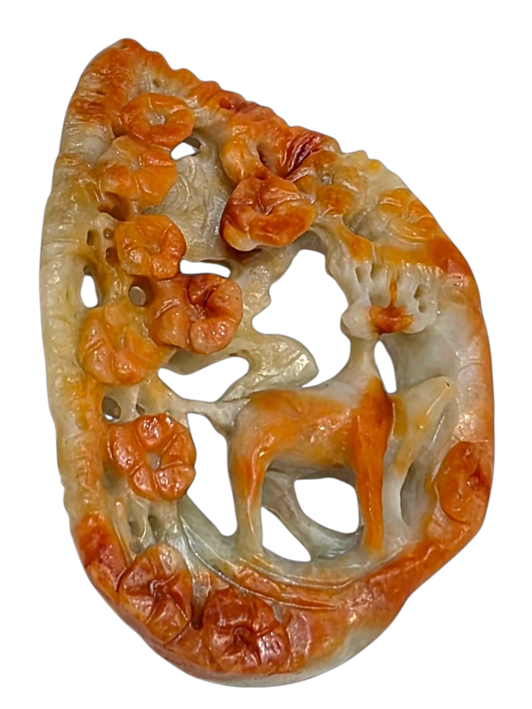

Environmental Risk Management
風水 (Feng Shui)Long before it became commercialized mysticism, Feng Shui was ancient China's architecture and risk management system. Wearing jadeite was an extension of this philosophy—creating a balanced, dense micro-environment on the body.
By wearing a naturally cold, incredibly dense stone (3.33 Specific Gravity), the wearer was forced to be physically grounded. It served as a tactile reminder to move with intention, avoiding reckless physical and financial decisions.
